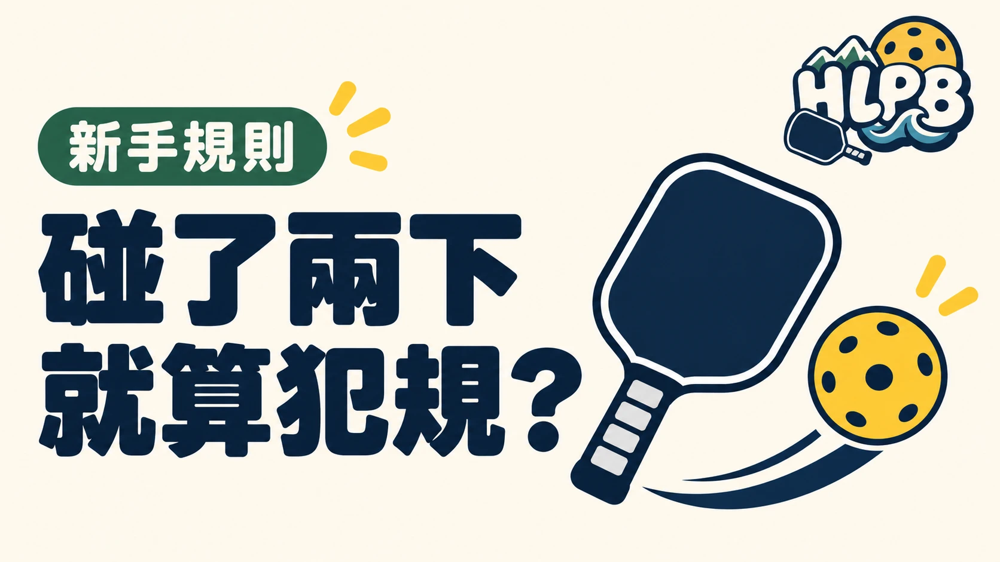

聽到兩次碰球聲，不能只靠聲音次數就判定失誤。依2026 USA Pickleball第10.D節，要一起看擊球者與擊球動作。
連擊，先分清這三種情況
| 情況 | 規則判定 |
|---|---|
| 同一球員以連續、單一方向的揮擊碰球不只一次 | 第10.D允許；仍須符合其他回球規則 |
| 同一球員不以連續、單一方向的揮擊碰球多次 | 第10.D.1：失誤 |
| 球員與搭檔在回球時都擊到球 | 第10.D.2：失誤 |
重點是動作，不是只聽碰球聲
「同一人、連續、單一方向」要一起判斷。允許特定連擊，不代表可以先接住球再送出去，也不代表雙打搭檔可以各碰一下。其他擊球規定仍然適用。
場上有疑問，回到條文確認
聲音、回球方向與旁觀者印象，都不足以單獨還原整個動作。正式賽事依大會採用的規則及裁判程序處理，本文是條文整理，不能代替特定爭議球的現場判決。
原始資料
資料核對：2026/10/19。
最後查證：2026-10-19｜資料來源：HLPB 編輯整理與正文所列來源
返回文章列表